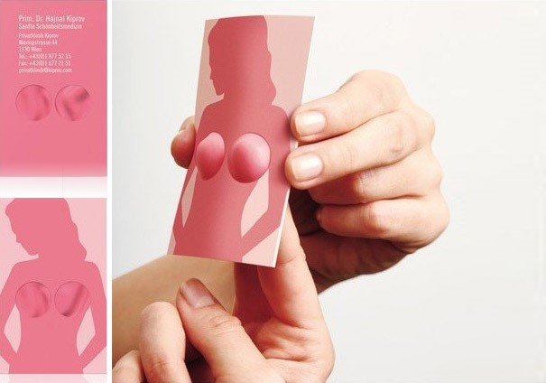

BLOG
Artigos de produção de material e comunicação.

Decoração de Espaços Empresariais? Fale com a Visual Up!
Os artigos mais recentes
Decoração de Espaços Empresariais? Fale com a Visual Up!
Quer dar personalidade e caráter a um espaço, mas não sabe por onde começar?
A decoração de espaços empresariais é um projeto que envolve várias etapas, profissionais e, sobretudo, tempo.
A Visual Up é especializada neste tipo de trabalhos.
Oferecemos um serviço completo para que não precise de se preocupar com nada.
Descubra a importância de decorar o seu espaço comercial ou corporativo e como começar hoje mesmo a projetar a imagem do novo local.
Importância da Decoração de Espaços Empresariais
O local de trabalho é um local de vida. É onde os colaboradores da sua empresa passam a maior parte do dia.
Da mesma forma que decora a sua casa para torná-la mais confortável e ter orgulho quando convida amigos, a mesma importância deve ser dada ao espaço de trabalho.
Deve ser um local agradável, convidativo, estimular a produtividade e a inovação. Estudos apontam para isso mesmo: trabalhadores mais eficazes e motivados com espaços bem organizados.
Pelo lado dos clientes ou parceiros de negócio, a decoração cria uma imagem de profissionalismo que dificilmente lhes sairá da cabeça.
A decoração de espaços empresariais permite:
• Diferenciar-se da concorrência;
• Estimular a parceria entre equipas de departamentos distintos;
• Tornar os espaços mais eficientes e funcionais; pode criar zonas de descanso, espaços para reuniões inovadores, entre tantas outras opções.
De uma forma indireta contribui também para seduzir os melhores talentos na sua área.
Os profissionais em geral, sobretudo os mais jovens, procuram empresas modernas para desenvolverem a sua atividade.
Todavia, a decoração de espaços corporativos pode ser uma tarefa complexa ou difícil de visualizar. Talvez desconheça as pessoas certas para desenvolverem o trabalho.
Até agora! Descubra o processo de trabalho end-to-end da Visual Up.
O que a Visual Up oferece na Decoração de Espaços Empresariais
A decoração inclui um conjunto de elementos:
• Mobiliário
• Pintura
• Organização dos espaços
• Cores
• Entre outros.
Para que reflita a identidade visual da empresa, a sua história e valores, há todo um conjunto de análises prévias.
As nossas equipas falam com os clientes, procuram perceber o que pretendem para aquele local, quantas pessoas vão trabalhar, entre outras informações que influenciam as características do espaço.
Colocam as perguntas certas para conhecer os gostos da administração e avaliar o que os colaborardes sentem falta.
Portanto, se tem uma ideia de outros locais que viu e gostou, a Visual Up transforma esses esboços mentais em projetos reais – concluídos dentro dos prazos acordados e com acabamentos de excelência.
Serviços incluídos nos projetos de Decoração Integrada na Visual Up
Consultoria
Se tem dúvidas sobre como otimizar o escritório ou espaço comercial, as nossas equipas elaboram um projeto completo.
Queremos facilitar a renovação do seu espaço empresarial, com o mínimo de trabalho do seu lado.
Conceção de layout
O espaço envolvente tem influência nas pessoas, na sua produtividade e bem-estar.
A Visual Up realiza um estudo, concebe o layout mais adequado ao seu espaço e apresenta-lhe uma proposta.
O objetivo é aproveitar ao máximo os elementos naturais e dispor o mobiliário por forma a facilitar a comunicação entre equipas e a mobilidade de todos os que usufruem do local.
Proposta de materiais
Para tornar o projeto ágil e concluído no timing certo, a Visual Up incluiu nos seus serviços a produção de materiais decorativos.
Significa que terá peças únicas, que mais ninguém tem. Consegue a sintonia perfeita entre o mobiliário – como cadeiras, mesas, armários – e a imagem que quer transmitir.
Adaptamos os materiais ao estilo que pretende e à identidade visual da sua marca – contemporâneo, moderno, rústico, elegante ou sofisticado. Há um mundo de opções!
Montagem e acabamentos do espaço
Um projeto não está finalizado até chegar à fase dos acabamentos. É uma etapa importante e que não deve ser descurada. É a diferença entre pormenores que fazem a diferença ou um serviço de fraca qualidade.
A vantagem de trabalhar connosco é que as nossas equipas estiveram envolvidas desde o primeiro momento. Portanto, sabem o que é expectável e trabalham para garantir a conformidade total do projeto.
Tem um Projeto de Decoração que tem vindo a adiar? Agora é o momento!
Talvez tenha adquirido um novo espaço empresarial, ou nunca se dedicou à decoração do atual, mas reconhece a importância de um ambiente bem decorado e funcional.
É sempre tempo para renovar e investir na imagem da sua empresa.
Para além de promover um local de trabalho agradável e produtivo, vai influenciar e reforçar a notoriedade da sua marca.
Agora que já sabe o “porquê”, resolva o “como” decorar o seu espaço.
Fale com a Visual Up, uma empresa especialista na decoração de espaços empresariais.
Empresa de Produção Gráfica – Consultoria e Criação
O design é bom para o negócio. Todas as peças gráficas contam uma história sobre a empresa, os seus serviços e produtos. Mas é preciso garantir qualidade e excelência nos projetos.
A Visual up é uma empresa de produção gráfica com experiência e um portfólio extenso.
Oferecemos serviços de produção de sinalética, stands comerciais, renovação e design de interiores, entre muitos outros. Há um elemento que diferencia todos os nossos trabalhos: a consultoria.
Descubra o que a nossa empresa pode fazer pelo sucesso do seu negócio.
Criação e Produção de Design com a Visual Up
Todos os projetos com a Visual Up envolvem o serviço de consultoria.
A sua empresa conta com uma equipa de profissionais experientes e atualizados quanto às tendências do mercado e materiais.
Qualquer peça gráfica deve ser estética e funcional. Deve agradar à vista e ser fácil de utilizar ou transmitir uma ideia de forma simples e imediata. Este princípio norteia a nossa atividade.
Trabalhamos há mais de 20 anos com indústrias e marcas de vários ramos de atividade, o que nos permitiu perceber o que funciona melhor, de acordo com as expectativas dos diferentes públicos-alvo.
Porque nem sempre as soluções standard resultam para todos os negócios.
Serviços da nossa Empresa de Produção Gráfica
Design
Criação de obras gráficas estéticas e funcionais, capazes de refletir o ambiente que a sua empresa procura transmitir aos clientes.
A nossa equipa de designers transforma ideias em projetos e ajuda os clientes a encontrarem as cores, tamanhos, formatos e materiais que correspondem aos valores e objetivos da sua marca.
Produção
A Visual Up orienta os clientes com base na sua experiência. Pode propor expositores e balcões promocionais, roll-ups, palcos, entre outros materiais.
A nossa equipa de designers transforma ideias em projetos e ajuda os clientes a encontrarem as cores, tamanhos, formatos e materiais que correspondem aos valores e objetivos da sua marca.
Seja qual for a peça gráfica, concebemos, produzimos e realizamos os acabamentos e montagens.
Enquanto cliente, estará a par de todo o processo, mas livre para continuar a gerir o seu negócio. No final pode contar com peças de qualidade.
Veja o exemplo do ICSS – Instituto internacional de Segurança no Desporto. A Visual Up produziu e instalou todo o cenário para uma conferência.
Sinalética
A sinalética – interior e exterior – é meio eficaz para atrair a atenção de novos clientes ou orientar a movimentação das pessoas num espaço comercial ou corporativo.
Porém, a variedade de alternativas é extensa. Desde sinalética luminosa, em acrílico, reclames luminosos ou displays em pontos de venda.
Quer causar impacto visual, mas não sabe por onde começar? As nossas equipas orientam a escolha.
Tal como fizeram com a Controlauto, uma empresa para a qual já realizámos diversos projetos.

Montras e fachadas
Talvez o seu produto não seja apropriado para colocar na montra da loja, ou a sua empresa ofereça serviços que, pelo seu caráter imaterial, seja difícil de expor na vitrine.
Porém, pode optar por um vinil informativo ou promocional. Desta forma, os clientes percebem de imediato a natureza da sua atividade.
A decoração de montras e fachadas elegantes, mas chamativas pode ser um desafio, mas não para as nossas equipas.
A Visual Up realiza projetos integrados. Analisamos a sua marca, o cliente-tipo do seu negócio, idealizamos e discutimos as propostas com os clientes.
Mais uma vez, a consultoria está sempre presente em todos os momentos.
Remodelação e design de interiores
A Visual Up realiza projetos integrados de remodelação e decoração de interiores – desde a conceção gráfica até à implementação do projeto.
Falamos em serviços de carpintaria, serralharia e outros suportes. Como pode ver pelo exemplo seguinte.
Um plano de renovação da imagem de um restaurante, feito de raiz. Tudo saiu das mãos e da mente criativa das nossas equipas.
Empresa de Produção Gráfica com experiência
Um bom suporte publicitário, uma peça gráfica ou a decoração de interiores de espaços empresariais e comerciais deve primar pela qualidade. Afinal, trata-se da imagem institucional da sua empresa.
Se procura uma empresa de produção gráfica para um projeto, fale connosco e perceba como podemos ajudar o seu negócio a convir uma imagem de confiança e que estimule as vendas.
Produção de Sinalética Exterior e Interior para vários negócios
A sinalética é como um vendedor silencioso que trabalha non-stop para os lucros da sua empresa. E que não tira férias!
A produção de sinalética é uma maneira eficaz de expor a sua empresa ao público, atrair a atenção dos clientes e diferenciar-se das outras marcas à sua volta. Com uma relação custo-benefício muito atrativa.
Seja sinalética interior ou exterior, deve primar pela qualidade e criatividade e apresentar um conceito original e uma aparência profissional.
Descubra o que a produção de sinalética pode fazer pelos lucros do seu negócio.
Por que deve investir na Produção de Sinalética
A combinação da sinalética exterior e interior acompanha o cliente ao longo de toda a jornada de compra.
Desde que passa na rua e se apercebe da sua marca, até que coloca um pé na loja ou no escritório e encontra indicações que facilitam a orientação no espaço.
As sinaléticas são recursos:
• Duráveis e resistentes às condições meteorológicas;
• Bastante versáteis e altamente personalizados;
• Adaptam-se a todo o tipo de orçamento;
• Assim que instalados, não exigem atenção constante.
A própria sinalética faz o trabalho de atrair os clientes para o interior do estabelecimento comercial ou escritório.
Sinalética Exterior
O objetivo de todas as marcas é vender. E para isso, é preciso que mais clientes entrem no seu estabelecimento.
A sinalética exterior oferece um espaço, visível da rua, para personalizar a sua mensagem.
De forma rápida, os potenciais clientes podem saber:
• O que encontram, que tipo de produtos e serviços;
• O que vão ganhar ao entrar no seu estabelecimento;
• O que oferece e que o distingue da concorrência.
É uma forma económica de fazer publicidade em comparação com outros meios (rádio, televisão ou imprensa). E quando combinada com outro tipo de campanhas de marketing, pode trazer resultados acima da média.
Vantagens
Imagine que a sinalética está num local onde há trânsitos e filas constantes. Enquanto esperam, as pessoas prendem o olhar nesta publicidade.
Contudo, é obrigatório escolher bem o local. Encontrar um sítio estratégico para potenciar todos os benefícios.
Entre as principais vantagens destacam-se:
• É uma publicidade ininterrupta – 24 horas, 7 dias por semana, 365 dias por ano;
• Apresenta uma boa relação custo/benefício;
• Alcança clientes que não frequentam os meios online;
• Ajuda na identificação do local;
• Perfeito para lojas ou escritórios que estão numa localização mais escondida e menos visível a quem passa.
Exemplos de utilização da sinalética exterior
Se é uma empresa recente, esta é uma excelente forma para dar a conhecer a sua marca num curto espaço de tempo.
Se o seu escritório ou estabelecimento encontra-se num local concorrido, a sinalética exterior é um elemento diferenciador.
Se tem uma loja comercial, um placard é um espaço onde pode informar o cliente sobre campanhas, baixas de preços ou promoções. Também é possível descrever o tipo de serviços que oferece.
Sinalética Interior
Se os clientes atravessam a porta de entrada da sua loja ou escritório, orientam-se sem dificuldade e encontram facilmente o que procuram – tudo através da leitura dos sinais -, o nível de satisfação não podia ser melhor.
As sinaléticas interiores são desenhadas para incentivar a permanência na loja, mas também para guiar o percurso das pessoas a pé no interior dos estabelecimentos.
Mas têm ainda outros benefícios.
Vantagens
• Encaminham os clientes para uma zona de promoções ou um artigo que procura dar destaque e potenciar as vendas;
• Permitem a customização total – materiais, formas, cores, tipografia e tamanho;
• Melhoram a perceção dos clientes sobre a marca;
• Podem ser adaptadas conforme a sazonalidade, épocas festivas, etc.
Exemplos de utilização da sinalética interior
A sinalética interior pode ser utilizada para identificar espaços ou direções.
Desta forma, os seus colaboradores, bem como clientes que visitem a sua loja ou empresa, conseguem ter informações importantes sobre a localização dos espaços.
Se é uma empresa, escritório ou estabelecimento, pode utilizar a sinalética interior para identificar salas de reuniões, quartos, casas de banho, copa, saídas, entre outros.
Se tem uma loja comercial, uma placa interior pode servir para identificar balcões de atendimento, provadores, casas de banho, armazéns, entre outros.
Produção de Sinalética Interior e Exterior
A versatilidade na produção de sinalética permite criar todo o tipo de cartaz publicitário. Originais e criativos. De forma atraente e profissional.
Algumas das opções disponíveis:
• Sinalética luminosa;
• Caixas de luz;
• Reclames luminosos com acabamento em tela translúcida ou em acrílico;
• Reclames luminosos em monobloco / 3D;
• Sinalética em acrílico, madeira, aço inox;
• Placas sinalética exterior;
• Placards.
A Visual Up produz estes materiais e é responsável pela montagem e acabamentos.
Produção de Sinalética personalizada para interior e exterior
Os benefícios da sinalética são visíveis, mas apenas se os materiais e a impressão forem de qualidade.
Deve ser uma solução convincente por forma a beneficiar de todo o potencial publicitário e de orientação dos clientes.
Veja o portfólio e conheça os serviços de sinaléticas personalizadas.
20 ideias de Cartões de Visita Criativos para a sua Empresa
A produção de material gráfico deve incluir a idealização e design de cartões de visita. Trata-se de um conteúdo físico com um enorme potencial porque prolonga a marca na mente dos clientes. Contudo, os cartões profissionais devem apelar à curiosidade e ser criativos. Veja neste artigo 20 exemplos de cartões de visita de várias profissões e áreas de negócio.
Porque deve a sua empresa ter um cartão de visita?
Um cartão de visita é uma forma eficaz de divulgar as marcas. Quando os interessados precisarem dos seus serviços, recordam-se do seu negócio e têm um elemento físico com todos os dados de contacto.
Se quer deixar uma marca, deve pensar de forma criativa e de acordo com a identidade visual do seu negócio.
O cartão de visita é uma tela em branco à espera de ser personalizada!
20 exemplos para inspirar o seu próximo cartão de visita
Cartão funcional
O negócio desta marca é entendido como criativo e inovador. Este cartão de visita está sempre presente na memória dos potenciais clientes pela sua originalidade. Para além disso, ajuda o consumidor a realizar uma tarefa, portanto, mais um ponto positivo.
Cartão com material referente à área de atividade
Com este modelo de cartão de visita, a perceção do ramo de atividade das empresas é imediata. Se a sua empresa tem um elemento ou matéria-prima de destaque, pode muito bem figurar num cartão profissional.
Cartão minimalista e sofisticado
Se a imagem que procura transmitir é de uma empresa moderna e sofisticada, o design deve demonstrar esses valores. Simples e elegante é uma fórmula intemporal que resulta sempre bem.
Cartões relacionados com a área
Qual a área de atuação da sua empresa e que tipo de clientes ajuda? A resposta a estas perguntas pode ajudar a ter uma ideia criativa, como as seguintes.

Cartão dirigido a um público-alvo particular
Tal como cada profissão tem a sua linguagem própria, o mesmo pode acontecer com os cartões de visita. Mesmo que não sejam entendidos pelo público em geral, chegam de forma certeira à sua audiência. Quem é o cliente típico do seu negócio? Procure identificá-lo.
Cartão com QR Code
Neste caso, trata-se de expandir o alcance do cartão de visita. É um meio para levar os clientes ao website ou a uma página de produto, de uma forma simples e criativa.
Cartão para pessoas com necessidades especiais
Existem milhões de pessoas com diferentes graus de incapacidade. São um público muitas vezes negligenciado, mas com poder de compra também.
Cartão em formato 3D e montagem incluída
Neste formato, os cartões de visita requerem 100% a atenção da pessoa. Ao manusearem o cartão e darem-lhe forma, a marca vai sendo absorvida e torna-se mais familiar.
Cartão com vários formatos
Retangular não é a única forma disponível. A produção de material gráfico evoluiu e permite imprimir diferentes formatos.
Quer um cartão de visita criativo? Confie a produção de material gráfico à Visual Up
Apesar das sugestões, pode ser difícil conceber um cartão de visita do zero. Se procura qualidade e inovação, considere pedir ajuda a especialistas. A Visual Up trabalha com os seus clientes desde a conceção do projeto até à produção final dos materiais gráficos. Precisa de ideias para um cartão de visita do seu negócio? Fale com a Visual Up.
O que esperar de uma Empresa de Produção e Instalação de Comunicação Visual?
Uma loja bem decorada convida a entrar. Um cartão de visita impresso com materiais de qualidade passa uma mensagem de profissionalismo. São apenas alguns exemplos do trabalho de uma empresa de produção e instalação de comunicação gráfica.
Na verdade, todos os suportes à nossa volta podem ser transformados em publicidade gratuita.
Diferentes Serviços Gráficos, um só objetivo: Tornar a sua empresa conhecida
O design gráfico de produtos e equipamentos é uma constante – na decoração de lojas e escritórios, na publicidade em carros institucionais, ou em qualquer material empresarial.
Porquê investir nesta forma de comunicação? Porque é das mais eficazes.
Os elementos visuais são processados 600.000 vezes mais rápido do que as mensagens escritas.
A imagem faz com que se lembrem das marcas quando precisam dos seus serviços. Mas para aproveitar todo o potencial é necessário ter um parceiro confiável e profissional.
Ao procurar uma empresa de produção gráfica, existem alguns critérios-chave que devem influenciar a decisão:
• Inovação;
• Experiência no mercado;
• Portfólio;
• Qualidade e supervisão.
Há empresas que dão um passo à frente da concorrência e incorporam serviços personalizados.
Visual Up: Contrate uma empresa de produção gráfica com experiência
A Visual Up oferece soluções chave na mão, mas gostamos de dizer que somos analogicamente digitais.
Personalizamos os serviços de acordo com as exigências, gostos e identidade dos nossos clientes.
Para além da personalização, incluímos ainda um apoio de consultoria.
Acontece com frequência que os clientes pretendem renovar a sua imagem corporativa, mas não sabem como.
Os nossos profissionais investem tempo a compreender as marcas e o que as diferencia da concorrência.
Se necessário, deslocam-se aos locais, analisam o potencial do espaço e oferecem soluções inovadoras.
Descubra os 5 Serviços de uma Empresa de Produção Gráfica com portfólio
1. Decoração de Interiores de Espaços Empresariais e Comerciais
A Visual Up trabalha com os clientes na renovação da imagem e decoração de espaços. O objetivo é criar um ambiente convidativo.
O trabalho inclui um estudo prévio da empresa, por forma a harmonizar os elementos gráficos com a identidade da marca.
2. Desenvolvimento de Material Gráfico de Comunicação e Publicidade
Uma empresa com um stand bem concebido numa feira comercial chama a atenção dos visitantes.
O mesmo acontece numa reunião empresarial. A decoração adaptada à audiência e a organização correta dos espaços causam uma boa impressão.
A produção de material gráfico na Visual Up, inclui:
• Decoração de eventos corporativos;
• Projetos de decoração integrada;
• Produção de material decorativo.
3. Decoração de Montras e Fachadas
A decoração de montras e fachadas é um suporte publicitário que comunica diretamente com os potenciais clientes e tem um enorme alcance.
A Visual Up encarrega-se da conceção e produção das peças gráficas.

4. Produção de Sintética
A sinalética tem o poder de:
• Dar visibilidade à marca;
• Facilitar a identificação dos espaços.
Mesmo marcas conhecidas têm a ganhar. Como a nosso cliente, a Controlauto.
A empresa investe na produção de sinalética exterior para facilitar a identificação dos centros de inspeção. Ao mesmo tempo, trabalha a retenção da marca na memória dos consumidores.

5. Comunicação Visual de materiais corporativos
Se olhar à sua volta, está a aproveitar todos os recursos disponíveis para publicitar a sua marca?
O trabalho da Visual Up incluiu o restyling do logótipo, a produção e o recorte de vinil.

Preparado para investir na imagem do seu negócio?
A componente gráfica permite que as empresas se destaquem no meio de tantas outras.
A Visual Up garante a total supervisão dos trabalhos para que os clientes tenham o produto final com qualidade e sem preocupações.
Quer dar destaque à sua marca, mas não sabe como? Descubra a proposta da Visual Up.
O poder da Decoração de Espaços Comerciais para atrair clientes
Tem uma loja a funcionar ou está a planear abrir as portas de um novo negócio? Um estabelecimento bem decorado e funcional é como um convite irrecusável.
Pense na decoração de espaços comerciais como uma forte aliada para atrair e converter clientes.
Pense nos seus clientes: 3 vantagens da Decoração de Espaços Comerciais
1. Surpreenda e aumente a notoriedade da marca
Segundo um estudo da Forbes em 2018, as marcas têm apenas 7 segundos para surpreender o seu potencial cliente e criar a primeira impressão.
Tão pouco tempo não significa um problema, mas uma oportunidade. Como?
A decoração de espaços comerciais é a diferença entre conquistar o público que passa na rua, ou passar despercebido.
Ser criativo e original compensa. Mesmo que outros vendam os mesmos produtos ou serviços, há espaço para se diferenciar dos demais.
Colocar uma sinalética, por exemplo, é bastante eficaz.
Uma imagem poderosa retém a marca na memória dos clientes. O seu objetivo é, quando surgir a necessidade, ser a primeira marca a ser recordada.
Vejamos alguns elementos gráficos e decorativos que reforçam a notoriedade da marca:
• Decoração com elementos visuais e gráficos que identifiquem a marca;
• Técnica de luzes;
• Displays luminosos;
• Decoração de montras.
2. Facilite o ato de compra e gere mais vendas
O objetivo é manter os clientes na loja, aumentando o tempo de exposição à marca e aos produtos.
Os consumidores atuais são rápidos nas suas decisões. Entram e abandonam os espaços comerciais em poucos minutos.
Contudo, diversos elementos conseguem abrandar esta jornada pela loja, ou atrair a atenção de quem passa.
Sabia que existem estudos que mostram que os clientes têm a tendência para realizar o percurso no sentido dos ponteiros do relógio?
Tendo em mente estes dados:
• Estude o caminho dos consumidores quando entram na loja;
• Coloque 1 produto, elemento, ou display de destaque no percurso habitual;
• Destaque produtos de qualidade e premium.
Pode também colocar pequenos “obstáculos” decorativos para forçar a paragem nalgum ponto estratégico.
Estas são técnicas de design e decoração de interiores que funcionam porque se baseiam no estudo de padrões de consumo.
3. Torne o espaço memorável e ganhe clientes fiéis
O planeamento dos espaços comerciais é essencial para manter os clientes na loja. Mas também tem uma componente emotiva.
Os consumidores atuais compram pela emoção e sentimentos gerados no momento. O objetivo das lojas deve passar por proporcionar uma experiência agradável e que apele às emoções.
Organizar um ambiente com estas características requer:
Disposição da mobília delimitando espaços no interior da loja;
Definição de zonas de loja (caixa, provadores, etc.);
Decoração de acordo com a marca e que gere reação nos consumidores.
Para os clientes, ter um espaço bem decorado e organizado é uma experiência de compra positiva.
No auge das redes sociais, a decoração aumenta a notoriedade da sua marca – se tiver um espaço de restauração é um trunfo incrível para incentivar a partilha de fotografias.
Como colocar em prática Projetos de Decoração?
É desafiante transformar as ideias em projetos. Recorrer a um parceiro estratégico é a solução. Representa um investimento com retorno.
É essencial pensar na decoração como uma potente ferramenta de marketing.
A Visual Up oferece serviços de consultoria e prima pela personalização de todos os projetos. Temos ao seu dispor, projetos de decoração integrada, produção de material decorativo, entre muitos outros serviços.
Fale com a Visual Up para renovar a decoração ou a planear o seu espaço comercial. Transformamos ideias em projetos de sucesso!
Faltam-lhe ideias para a Decoração de Montras? Deixe-se inspirar!
Todas as empresas sabem que a decoração de montras é uma forma de atrair novos clientes e incentivar o ato de compra. Ninguém fica indiferente a uma vitrina bem concebida!
Apesar dos benefícios, nem sempre é fácil idealizar o produto final e acertar com a disposição dos elementos, as cores ou a escolha do vinil que reflete melhor a marca.
Este artigo é uma fonte de inspiração! Vamos mostrar-lhe alguns dos projetos da Visual Up para que possa ter ideias e investir de forma estratégica.
Qual é o objetivo da Decoração de Montras?
É das primeiras questões no início de um projeto decorativo. A montra funciona como uma amostra do que os clientes encontram no interior da loja ou espaço comercial.
Primeiro, há que definir o objetivo:
• Os produtos são os elementos de destaque?
• Ou pretende reforçar a identidade e notoriedade da marca?
Por exemplo, a aplicação de vinil é mais indicada para dar a conhecer a empresa, os seus produtos e serviços. Por outro lado, se o destaque vai para os produtos, a decoração da montra deverá girar à volta destes elementos.
Podem ser produzidas peças gráficas, como Roll Ups e Displays, ou outros elementos decorativos para criar um ambiente fiel ao tema escolhido. Mas lembre-se de que a decoração nunca poderá ofuscar o produto!
Vejamos de seguida um dos exemplos do nosso portfólio que demonstra esta ideia na perfeição.
3 Ideias do nosso portfólio para o inspirar na decoração de montras
1. Renovação de Montra e Vitrinismo da RoseBud
Consciente da importância de uma fachada e montra atrativa, a RoseBud contactou a Visual Up para o desenvolvimento de um projeto de renovação de montra e vitrinismo.
A decoração minimalista e elegante respeitou a identidade visual da sapataria. Afinal, trata-se de uma marca de sapatos que faz uma seleção criteriosa dos produtos comercializados. br
Neste caso, o produto é o elemento principal.
A colocação do logótipo na montra com elegância não ofuscou o interior da loja. Pelo contrário, permitiu que os clientes vissem o interior da loja. É o primeiro passo na intenção de compra.
2. Decoração de Montra da Stylu’s Cabeleireiro
Este cabeleireiro em pleno centro de Lisboa, procurou a Visual Up para um projeto de decoração de montra.
Ao contrário da sapataria, o objetivo da Stylu’s é informar os clientes acerca dos seus serviços.
De uma forma clara e visualmente agradável, a decoração da montra deu informações valiosas aos clientes e potenciais consumidores:
• Nome do estabelecimento;
• Logótipo;
• Serviços;
• Contacto para marcações;
• Horário de funcionamento.
Esta empresa usou a decoração da sua montra como o palco para passar uma mensagem.
O cabeleireiro atraiu novos clientes e ao mesmo tempo reforçou a notoriedade da marca. De dia ou de noite, a decoração da montra funciona como uma ferramenta de comunicação e marketing económica e eficaz.
3. Creche do Gato Amarelo
Por vezes, um único elemento decorativo faz toda a diferença.
Por forma a tornar a sua marca reconhecível, a Creche do Gato Amarelo optou por decorar de uma forma simples, mas eficaz.
Em alguns casos, menos é mais!

5 Conselhos para Decorar uma Montra de forma eficaz
A montra pode ser o primeiro contacto do cliente com a marca. Tem de impressionar e passar uma boa impressão.
Existem alguns segredos que fazem com que a montra se destaque ainda mais:
1. Use caixas de luz para sobressair o nome da marca ou certos produtos na montra;
2. Utilize objetivos decorativos originais e com qualidade;
3. Destaque logótipos, produtos mais vendidos e outras informações relevantes que devem estar ao nível dos olhos;
4. Renove a decoração com alguma frequência;
5. Aproveite épocas festivas e datas importantes para redecorar a montra.
Razões para investir numa empresa com experiência no mercado
Fazer as escolhas certas envolve conhecimento. É preciso dispor de um vasto leque de materiais para conseguir satisfazer as necessidades de todas as empresas. Existem soluções standard, mas peças únicas têm outro charme!
A personalização à medida do gosto e requisitos das empresas, seja qual for o ramo de negócio, é uma das imagens de marca da Visual Up.
Se procura ideias para decorar a montra do seu negócio, tenha em atenção algumas das dicas e exemplos deste artigo. Conte com a Visual Up para desenvolver a ideia e todo o projeto de decoração da sua montra.
Procura uma empresa que Produza Material Gráfico? Conheça-nos!
A personalização de todos os projetos é uma característica que distingue a Visual Up das restantes empresas. Com o nosso serviço de consultoria procuramos identificar os requisitos do cliente e propor soluções adaptadas à sua realidade.
Campanhas pontuais, comunicações em pontos de venda ou presença numa exposição através de um stand?
Fazemos tudo à medida e somos um parceiro ativo. Sugerimos aos nossos clientes ideias inovadoras para espaços, eventos, stands e outros materiais gráficos.
Com produção de material gráfico de qualidade, as empresas ganham vantagem competitiva e passam a ser capazes de:
• Aumentar a retenção de informação na mente dos consumidores;
• Reforçar a notoriedade da sua marca;
• Ganhar maior reputação no mercado;
• Destacar-se da concorrência;
• Aumentar o número de clientes.
O que esperar do Serviço Completo de Comunicação Visual da Visual Up?
Produção de Material de Comunicação
Procura uma empresa que idealize, desenhe e imprima suportes publicitários com qualidade? A Visual Up produz peças gráficas que vão impactar o seu público-alvo e reforçar a notoriedade do seu negócio, através de:
• Materiais corporativos;
• Flyers;
• Cartazes;
• Roll ups;
• Bandeirolas.
Decoração de Viaturas
Existem espaços com enorme potencial de divulgação da marca e que são, por vezes, menosprezados. Quantas vezes reparou no automóvel à sua frente numa fila de trânsito, ou estacionado perto da sua casa ou local de trabalho?
Existem múltiplas opções de materiais e designs para a decoração de frotas corporativas.
A Visual Up apresenta aos seus clientes propostas de valor e realiza todos os trabalhos, incluindo a impressão gráfica e montagem.
A SPAR é o exemplo de como a identificação de viaturas empresariais é um meio de divulgação do seu negócio e uma forma de consolidar a marca no mercado.
Design de Equipamentos
Procura o desenho de equipamentos com características únicas?
Desenhamos soluções de design para a sua empresa como:
• Balcões à medida do seu espaço;
• Expositores personalizados;
• Peças de comunicação originais.
• As equipas da Visual Up têm experiência no design de equipamentos para todo o tipo de indústrias.
Produção de Merchandising
A distribuição de artigos com a imagem da empresa ativa a memória dos potenciais clientes. São suportes de comunicação versáteis e económicos. As empresas podem colocar o seu logótipo, contactos empresariais, um slogan apelativo… as opções são variadas!
A Visual Up aposta no desenvolvimento dos mais variados artigos de merchandising personalizados:
• Pens;
• Ímanes;
• Marcadores de mesa;
• Cadernos e canetas;
• Cartões;
• Entre muitos outros.
Neste trabalho, por exemplo, produzimos uma série de fitas de pescoço para identificação das crianças do Centro Social 6 de Maio, na Amadora.
Design Gráfico
As primeiras impressões demoram apenas segundos a serem construídas.
Comunicar e passar uma mensagem através de imagens e palavras exige técnica. A perceção da marca pelo cliente passa pela qualidade do design.
Um suporte publicitário criativo e de alta qualidade consegue passar uma imagem profissional e a sua identidade.
A Visual Up acompanha as últimas tendências do design. Criamos projetos de raiz adaptados à sua empresa e produzimos todas as peças com a qualidade solicitada.
Descubra outros Projetos de Comunicação Visual da Visual Up
O nosso portfólio de trabalhos de design e produção inclui diversas parcerias com resultados positivos para os nossos clientes e parceiros, uma vez que realizamos projetos de forma integrada, desenvolvemos e produzimos, realizamos a montagem e os acabamentos necessários.
É o caso do projeto com a EcoBrisa. No final dos trabalhos, a marca beneficiou de um expositor, cuja imagem respirava profissionalismo.
Veja também o exemplo da Accor – Grupo de serviços de França, presente nos ramos de hotelaria, agências de viagens, restauração e gestão de casinos.
A Visual Up realizou:
• Design do stand;
• Construção e decoração (impressão digital em vinil e aplicação nas paredes e fachadas);
• Montagem e desmontagem.
A empresa utilizou diversos suportes físicos, criando um espaço em total harmonia com a identidade visual da marca.
Precisa de ajuda com a Comunicação Visual da sua empresa?
Descobrimos neste artigo como diferentes materiais gráficos ajudam as empresas a conversarem com a sua audiência. Depois destes exemplos, sente que ganhava em reforçar a presença da sua marca no mercado?
Fale connosco sobre o seu projeto! Confie a produção de material gráfico à Visual Up.
4 Razões para investir na Decoração de Eventos Corporativos
A decoração de eventos existe para impressionar e tornar um acontecimento memorável. Sejam clientes antigos ou novas parcerias de negócio, um encontro bem planeado e com todo o profissionalismo contribui para reforçar a confiança nas marcas.
A decoração é, por isso, uma ferramenta de marketing e comunicação que não deve ser menosprezada. Funciona como um elemento que permite destacar e diferenciar uma organização entre milhares.
Que tipo de Eventos pode a sua Empresa promover?
O tipo de evento depende da natureza do seu negócio. Por exemplo, se está no ramo da tecnologia, pode ser o anfitrião de uma mesa redonda ou uma palestra para discussão e partilha de ideais sobre um tema da área.
Existem vários formatos de eventos que as organizações estão em condições de promover e onde a decoração de eventos tem influência:
• Jantares ou almoços corporativos;
• Eventos para lançamento de um novo produto / serviço;
• Eventos para assinalar a data de aniversário da empresa;
• Workshops;
• Palestras;
• Mesas redondas.
Em qualquer dos casos, as empresas devem aproveitar estes momentos para causar uma boa impressão.
Os encontros presenciais, entre empresários e profissionais da área geram parcerias de valor. Numa escala mais global, veja-se a recente aposta de Portugal na atração de mais eventos para o país, devido aos seus benefícios.
4 razões para apostar na Decoração de Eventos
1. Fideliza clientes e parcerias
Reforçar os laços com clientes de longa data é de extrema importância.
Os eventos corporativos são ideais para colocar estas parcerias mais antigas sob os holofotes e dar-lhes a devida atenção. É mais fácil e rentável alimentar e cuidar de relações preexistentes do que centrar apenas os esforços na conquista de novos clientes.
Estas empresas trazem-lhe negócios repetidos e a possibilidade de novos contratos. Existe já uma relação de confiança que sai reforçada depois de um evento destinado a reconhecer o valor destas longas parcerias.
2. Conquista novos clientes
O networking é importante para que as empresas estabeleçam uma rede de contactos sólida. Mas para isso, precisam de destacar-se da concorrência.
A decoração de um espaço pode ser o primeiro contacto do público-alvo com a sua marca. Vai permitir criar um ambiente único e que espelha os valores da sua organização.
Neste tipo de eventos valoriza-se a interação pessoal. Os encontros presenciais quebram barreiras e geram confiança nos outros. A credibilidade é um dos valores mais apreciados no mundo dos negócios.
3. Reforça a imagem da marca
Um evento bem estruturado e organizado, com decoração funcional e confortável não passa indiferente a ninguém. Mas a fasquia eleva-se quando se trata de um público corporativo.
A decoração de eventos corporativos deve contar com profissionais de decoração experientes. Afinal, existem detalhes que fazem a diferença e contribuem para a perceção da marca, tais como:
• Localização e organização das mesas;
• Decoração do espaço de acordo com identidade visual da marca;
• Ideias inovadoras que transmite a imagem de uma empresa à frente do seu tempo.
4. Motiva equipas internas
Todas as empresas procuram ter no seu núcleo profissionais envolvidos e produtivos.
Os benefícios para incentivar o bem-estar profissional passam por um bom salário, flexibilidade de horários e outras contribuições. Mas também incluem eventos, como festas de natal ou aniversários da empresa.
Estes milestones são oportunidades para reforçar os laços entre trabalhadores de diferentes departamentos ou no seio das equipas. Melhoram também a imagem que os colaboradores têm das hierarquias e da própria organização.
Conheça a Fórmula para o Sucesso na Decoração de Eventos
Qualquer evento corporativo deve ser marcado pelo profissionalismo, uma vez que está vinculado a uma empresa.
Antes de mais, é importante perceber o motivo do evento, porque determinará todo o projeto decorativo. Existem perguntas-chave que as equipas da Visual Up têm em consideração:
O evento destina-se a recrutar potenciais parceiros de negócio?
O evento marca o início / lançamento de um novo produto ou serviço?
O evento destina-se a atrair talentos ou motivar equipas internas?
Estes requisitos devem estar sempre presentes durante todo o projeto. Eles influenciam a escolha dos materiais, os elementos decorativos, a disposição da sala, o aluguer de espaços, etc. É um processo exigente, daí a necessidade de confiar os trabalhos a uma empresa com experiência.
Quer oferecer um Evento Memorável? Confie os trabalhos à Visual Up
Os eventos corporativos são marcos importantes na história das empresas. O objetivo da Visual Up é oferecer aos seus participantes uma experiência única e tornar o evento memorável.
Com os nossos serviços, garantimos à sua empresa um evento:
• Visualmente bem estruturado e organizado;
• Adaptado ao local e ao público-alvo;
• Com decoração funcional e personalizada ao tema.
A promoção de eventos aumenta a visibilidade das empresas e permite atrair clientes de forma mais sustentada. Mas confie a decoração de eventos corporativos a profissionais com know-how e experiência. Só assim, terá garantias de sucesso.
Cause impacto no seu público-alvo! Fale com a Visual Up sobre a decoração do seu próximo evento.
Construção de Stands para feiras: Confie em um especialista
As feiras e exposições são eventos de grande magnitude e oportunidades únicas para a promoção e divulgação das marcas.
A Visual Up tem um processo de construção de stands para feiras que liberta os clientes de qualquer trabalho, permitindo que se concentrem em exclusivo na sua participação no evento.
Veja neste artigo alguns exemplos do nosso portfólio e como a Visual Up procura sempre personalizar os pedidos dos seus clientes.
Qual a importância da sua Empresa participar com um Stand numa Feira?
Os stands comerciais funcionam como uma montra. Devem ser atrativos, refletir a identidade visual da empresa e facilitar a comunicação entre as marcas e potenciais clientes.
Muitas vezes, é nas feiras que se realizam contactos importantes. A próxima grande parceira ou contrato pode estar entre os milhares de visitantes. É preciso disputar a atenção do seu público-alvo.
Os stands devem suscitar a curiosidade das pessoas e permitir distinguir a empresa entre tantas outras que participam no evento. Mas não é apenas uma questão visual! A construção dos stands deve primar pela atratividade, mas os espaços também se querem funcionais.
Os projetos de construção de stands devem:
• Concentrar no objetivo comercial da feira;
• Ter uma correta exposição e apresentação dos produtos ou serviços;
• Considerar a posição dos trabalhadores que promovem a marca;
• Eliminar barreiras físicas e promover o fluxo das pessoas;
• Incentivar a comunicação com os clientes.
Colocar um projeto destes em prática é um processo trabalhoso, mas quando realizado de forma profissional, traz retorno às empresas.
Porque deve confiar a Construção de Stands a uma Empresa?
Existem diversas atividades-chave envolvidas na construção de stands e que escapam ao domínio das marcas. É neste ponto que entram em campo os especialistas, como a Visual Up. Só desta forma a sua empresa conseguirá disputar e conquistar a atenção dos visitantes.
As nossas equipas de profissionais são responsáveis por:
Conceber o formato do stand de acordo com a localização na feira ou exposição;
Escolher os materiais de construção mais apropriados;
Definir os materiais gráficos e decorativos de acordo com os valores da marca;
Produzir todos os materiais;
Montar o stand e realizar os acabamentos necessários.
Soluções completas com a Visual Up
As empresas não podem dar-se ao luxo de ter sob a sua alçada todas estas tarefas. Pelo contrário, devem estar dedicadas a planear a sua participação por forma a otimizar ao máximo o retorno de investimento.
Ao confiar o seu projeto de stand à Visual Up tem a garantia de uma solução end-to-end.
Os nossos profissionais trabalham em estreita colaboração com os clientes, mas são autónomos. A execução do projeto é realizada de acordo com os requisitos das marcas, mas com total liberdade para os seus clientes.
Conheça o processo de construção de stands para feiras da Visual Up
As feiras comerciais são eventos com enorme potencial, mas para alcançarem todo o seu potencial, devem ser bem projetados e executados.
Tendo este princípio em mente, os nossos projetos visam desenvolver e implementar espaços funcionais que potenciem a comunicação e o contacto com os clientes. Em alguns casos, as soluções chave na mão podem não ser as mais adequadas.
A Visual Up investe na consultoria de projetos com uma participação ativa. Sugerimos ideias inovadoras e ajudamos os clientes a colocarem as ideias em prática.
Personalização é um fator-chave
Os formatos standards, vulgarmente online à distância de um clique, não se adaptam às medidas de todas as empresas.
A customização é um dos princípios que norteia o trabalho na Visual Up, tanto a nível de design, como na escolha e adaptação dos formatos e materiais às infraestruturas.
Os nossos profissionais dedicam especial atenção ao seu briefing e à identidade visual das marcas. Desta forma, criamos projetos originais e sem precedentes!
Acompanhamento total do projeto de Construção de Stands
A Visual Up garante um acompanhamento completo na montagem e acabamento dos stands comerciais.
Estamos ao lado dos nossos clientes em todo o processo, desde a conceção e design da comunicação, passando pela produção do material gráfico até à decoração total.
Stands com Materiais de Qualidade
A Visual Up tem os seus fornecedores e produz os próprios materiais gráficos e de decoração, o que nos permite:
• Cumprir os prazos acordados com os clientes;
• Garantir a qualidade dos materiais e do próprio expositor.
Assim sendo, os stands podem ser reutilizados e aproveitados noutro evento, com eventuais adaptações tendo em atenção o objetivo comercial da feira e os visitantes.
Como é possível verificar, existe um sem-número de trabalhos na construção de um expositor. Escolher uma empresa com know-how e experiência garante que o stand é de qualidade e reflete uma imagem profissional.
Aproxima-se uma feira e procura uma empresa com experiência na construção de stands?
Fale hoje mesmo com a Visual Up!
5 serviços de Decoração de Espaços Empresariais que deve conhecer
Decorar é mais do que uma questão estética. A decoração de espaços empresariais melhora a produtividade das equipas e a satisfação dos funcionários. Os colaboradores têm mais energia e motivação para trabalhar quando se sentem confortáveis no seu local de trabalho.
Qual a importância da sua Empresa participar com um Stand numa Feira?
Os stands comerciais funcionam como uma montra. Devem ser atrativos, refletir a identidade visual da empresa e facilitar a comunicação entre as marcas e potenciais clientes.
Muitas vezes, é nas feiras que se realizam contactos importantes.
Acertar na decoração certa e que representa a sua marca pode ser um desafio.
A Visual Up compreende esta dificuldade. Estamos no mercado para ajudar as empresas a tornarem-se locais agradáveis e mais produtivos.
Trabalhe com uma empresa parceira e otimize os seus resultados
Os espaços têm de se adaptar aos seus objetivos de negócio, e não o contrário.
A Visual Up reinventa e cria ambientes corporativos que favorecem o ritmo de produção das equipas, levando a que:
• Os colaboradores terminem tarefas mais rápido e com maior eficiência;
• A equipa trabalhe junta e de forma colaborativa;
• A organização dos espaços tenha efeitos positivos na saúde, como redução do stress e fadiga.
O método de processo da Visual Up inclui consultoria e reuniões com clientes, identificação das necessidades e requisitos.
Gostamos de ver a nossa empresa como “analogicamente digital”. Significa isto que, apesar de estarmos disponíveis online, valorizamos o contacto pessoal e vamos ao local, avaliamos os espaços, temos em consideração o core business das organizações e fazemos peças por medida.
5 serviços de decoração da Visual Up que tem mesmo de conhecer
1. Consultoria de design de espaços empresariais
Se tem dúvidas quanto à melhor maneira de projetar ou remodelar o seu escritório ou loja comercial fale connosco!
Temos um serviço de consultoria com profissionais experientes, prontos para ajudar a concretizar as suas ideias.
Um dos elementos que distingue a Visual Up é a sua capacidade de aconselhar e sugerir soluções inovadoras.
2. Decoração integrada
A empresa disponibiliza todos os serviços. Realizamos projetos globais, desde a conceção até à implementação dos equipamentos e materiais gráficos.
Abraçamos projetos grandes e pequenos e temos diversos materiais disponíveis de acordo com as suas necessidades.
3. Gestão de projetos de decoração
A gestão do seu negócio exige tempo e dedicação. A Visual Up encarrega-se de todos os trabalhos até à montagem final.
Embora sejamos independentes, as nossas equipas estão sempre disponíveis para discutir questões do projeto ou esclarecer dúvidas.
4. Produção de material decorativo
Na Visual Up, os nossos serviços incluem a produção de diversos materiais de decoração.
Todos os projetos beneficiam de uma empresa que tem os seus próprios recursos. Desta forma, conseguimos evitar atrasos e custos extra desnecessários.
5. Montagem e acabamentos
Estamos presentes em todas as fases do projeto de design. Desde a idealização dos espaços empresariais até à fase de acabamento e montagem.
Após a intervenção da Visual Up terá um espaço eficiente e com uma imagem visual bem construída.
Projetos de Decoração de Espaços Empresariais de Sucesso da Visual Up
Projetos de Decoração de Espaços Empresariais de Sucesso da Visual Up
Um grande trabalho de sucesso envolveu uma empresa com escritórios no Lagoas Park, em Oeiras. O espaço corporativo mudou de forma radical!
As nossas equipas colocaram imagens temáticas em zonas estratégicas. Ao realçar contrastes, o ambiente tornou-se mais convidativo.
Outro exemplo é a 112 PC, empresa de Reparação de Computadores, que recorreu à Visual Up com o desafio de uniformizar e promover a sua imagem.
O resultado final foi um local que reforça e confere autoridade à marca.
A partir destes exemplos, pode perceber-se que a decoração de espaços empresariais é um tema relevante no mundo corporativo e lhe traz muitos benefícios.
Vantagens de um design eficiente de espaços corporativos
Melhore a relação entre colaboradores
A maioria dos projetos envolve a colaboração de funcionários de diferentes áreas e com competências distintas. Um espaço de trabalho bem concebido, sem barreiras e divisórias, promove esta interação.
Tenha espaços mais eficientes
Locais de trabalho e de reuniões bem definidos tornam as empresas mais funcionais.
Outro elemento importante são os espaços informais. Muitas ideias para projetos surgem nestes ambientes.
A decoração de espaços corporativos permite identificar oportunidades ocultas, mas com grande potencial.
Reforce a personalidade da empresa
Uma imagem visual bem construída é uma forma diferente de mostrar a missão e os valores que regem as marcas.
Um exemplo claro é o projeto para o atelier Yourspace. A Visual Up personalizou a parede de um escritório com a descrição da missão da empresa. O trabalho incluiu recorte em vinil e aplicação da decoração.
Uma peça gráfica do género será o mote para uma conversa inicial. Funciona como desbloqueador de conversas mais sérias.
Confie na experiência da Visual Up! Mostre-nos o seu espaço empresarial e nós pomos em prática as suas ideias.
Design Gráfico de Comunicação – Benefícios para o seu negócio
As marcas têm apenas alguns segundos para captar e manter a atenção dos clientes. A solução passa por construir uma mensagem forte e que fique na mente dos consumidores. E para isso, as empresas devem apostar num design de comunicação de excelência.
Neste artigo, procuramos desconstruir o conceito e apresentar as vantagens destes suportes de comunicação para o seu negócio.
O que inclui o Serviço de Design de Comunicação da Visual Up?
O design de comunicação é um processo criativo que, quando bem construído, gera uma resposta por parte do consumidor. Leva o cliente a interessar-se pela sua marca, a comprar os seus produtos ou serviços.
Podemos estar a falar de projetos que envolvem a conceção e montagem de stands comerciais numa exposição ou a impressão de materiais corporativos e cartões de visita. Todos estes elementos refletem a identidade da marca e influenciam o seu público-alvo.
A Visual Up oferece um vasto leque de serviços:
• Projetos de decoração integrada;
• Decoração de eventos corporativos;
• Produção de Stands para feiras comerciais;
• Decoração e conceção de reuniões empresariais;
• Produção de material decorativo.
Saiba mais sobre os nossos serviços de produção de material gráfico de comunicação e publicidade.
3 Benefícios do Serviço de Design de Comunicação da Visual Up
1. Reforce a credibilidade da sua marca
Reputação! Talvez um dos conceitos mais importantes para qualquer negócio.
A opinião favorável dos consumidores ou parceiros de negócio constrói-se com base em diversos contactos com a empresa e seus colaboradores. Desde o atendimento ao design dos suportes de comunicação.
Um empresário com materiais corporativos personalizados, um cartão de visita ou um espaço de reuniões cuidado, transmite uma imagem profissional. Gera nos outros um sentimento de confiança e reforça a credibilidade da sua marca.
2. Cause impacto no seu público-alvo
Reconhecimento da marca. Outra palavra de peso no mundo corporativo.
Um design de comunicação cuidado permite que os clientes identifiquem e diferenciem a sua marca da concorrência. De forma imediata, estabelece-se uma conexão entre a empresa e os produtos ou serviços que oferece.
Receber um catálogo bem desenhado, com um layout moderno, causa impacto nos consumidores. O toque, a qualidade do papel e a atenção ao pormenor geram experiências positivas.
3. Conquiste mais clientes
Todos materiais servem de meio de comunicação com potenciais clientes.
Algumas peças são impressas e portáteis, pelo que estão sempre disponíveis. Isso leva a que exista uma maior probabilidade da sua empresa ficar retida na memória dos consumidores.
O objetivo é que a sua marca seja a escolha dos clientes uma vez que eles necessitem de produtos ou serviços como aqueles que fornece.
Visual Up: Experiência e know-how no design de comunicação
Escolher a decoração ou o suporte publicitário mais adequado para a sua empresa, ou para um evento corporativo, pode gerar muitas dúvidas.
A Visual Up sabe que a definição destes elementos é um desafio para muitas organizações, sem experiência. Mas não para as nossas equipas!
O trabalho envolvido no design de comunicação das marcas faz parte do nosso quotidiano.
Confira alguns exemplos do nosso Portfólio
A Nova Relva é uma empresa especializada na comercialização de produtos para relvados e é um dos melhores exemplos de um design de comunicação cuidado e coerente.
O resultado de uma clara definição do design de comunicação permitiu à empresa manter uma imagem personalizada e diferenciadora em todos os seus suportes.
A Visual Up encarregou-se da conceção e produção dos seguintes materiais de comunicação e publicidade:
Design gráfico;
Rebranding;
Packaging;
Design de embalagens;
Decoração de viaturas;
Conceção de layout;
Produção de displays.
Outro exemplo do nosso portfólio é a Quilaban, uma empresa portuguesa que importa e distribui produtos para diagnóstico clínico e biotecnologia.
Neste trabalho respondemos ao desafio de realizar a conceção e o design gráfico de um calendário corporativo e de um Pop Up institucional.
O produto final permitiu à empresa distribuir um suporte publicitário que é útil e, em simultâneo, reforça a notoriedade da marca. Já o Pop Up permite passar com eficácia a mensagem sobre os serviços da organização. De uma forma visual, direta e apelativa.
Um correto design de comunicação pode impulsionar o crescimento dos negócios e atrair mais clientes.
Torne a sua marca conhecida com o design gráfico de comunicação da Visual Up. Contacte-nos!
Decoração de Montras e Fachadas: Como atrair novos clientes
A decoração de montras e fachadas é a diferença entre chamar a atenção do público ou passar despercebido.
É um elemento publicitário de grande visibilidade com inúmeras vantagens:
• Melhora a notoriedade da marca;
• É um espaço de comunicação versátil e de longo-prazo;
• Atrai novos clientes;
• Facilita a promoção de produtos ou serviços especiais.
Benefícios para Lojas Comerciais
A decoração exterior demonstra de forma clara o tipo de loja e o produto ou serviço que a marca oferece.
No processo de compra do consumidor, após conquistar a atenção dos clientes, é importante criar o ambiente ideal e que incentive o ato de compra. Tudo deve ser planeado, por exemplo:
• Definição de corredores de forma a facilitar fluxo dos clientes e movimentação dos funcionários;
• Localização da zona de caixa;
• Colocação de “obstáculos” com produtos apelativos que evitem a saída rápida dos clientes da loja;
• Entre outros pontos-chave para captar a atenção.
Chama-se a isso, a conceção do layout, um dos serviços propostos pela Visual Up e que veremos mais à frente.
Benefícios para Empresas com Escritórios
Um letreiro com o nome da empresa, ou um vinil com a descrição dos serviços, é um meio para informar o público em geral e conquistar novos consumidores.
O objetivo é identificar o seu espaço e informar os clientes sobre quem é e o que faz a sua empresa, de uma forma rápida e direta
Opte por um serviço personalizado e diferencie-se da concorrência
O estilo de comunicação varia de negócio para negócio, não existe uma fórmula mágica.
A Visual Up destaca-se da concorrência porque personaliza ao máximo todos os projetos de decoração de montras e fachadas. Temos em atenção:
• Natureza do negócio;
• Marca e identidade visual;
• Regras de negócio;
• Perfil do consumidor.
3. Conquiste mais clientes
Todos materiais servem de meio de comunicação com potenciais clientes.
Algumas peças são impressas e portáteis, pelo que estão sempre disponíveis. Isso leva a que exista uma maior probabilidade da sua empresa ficar retida na memória dos consumidores.
O objetivo é que a sua marca seja a escolha dos clientes uma vez que eles necessitem de produtos ou serviços como aqueles que fornece.
Conheça os serviços de Decoração de Montras e Fachadas da Visual Up
1. Projetos de Layout
Utilizar os espaços de forma eficiente e torná-los apelativos exige experiência e técnica.
As equipas da Visual Up projetam o esboço do arranjo físico do seu escritório ou loja comercial.
Incluímos na proposta todos os elementos de design e decoração para que tenha uma visão global do projeto.
2. Produção Digital de Grande Formato
Prenda a atenção de quem passa com peças gráficas bem desenhadas e com um tamanho difícil de ignorar. Mesmo à distância, a sua loja ou empresa não passará despercebida.
No entanto, é preciso garantir a qualidade dos materiais e da própria impressão para criar o efeito pretendido.
A Visual Up dispõe do know-how e dos equipamentos necessários à impressão de suportes de grande formato em boa qualidade.
3. Produção de vários Tipos de Material
Um vinil transparente transmite a sensação de espaço. Pelo contrário, um elemento opaco define maior privacidade. Trabalhamos com um vasto leque de materiais por forma a dar resposta às necessidades da sua empresa.
Dispomos de diferentes tipos de vinil para montras e fachadas, tais como:
• Vinil adesivo mate e brilhante;
• Vinil adesivo transparente;
• Vinil removível;
• Vinil fosco;
• Vinil microperfurado.
É importante também referir que a Visual Up realiza um serviço completo. A nossa empresa produz, realiza a montagem dos suportes publicitários e todos os acabamentos necessários.
Exemplos de Projetos de Decoração da Visual Up
O portfólio da nossa empresa conta com colaborações de valor.
Para o grupo Cordeiro Saúde, a Visual Up desenvolveu, produziu e instalou a decoração da fachada da Clínica da Beloura.
A empresa ganhou notoriedade com o novo suporte publicitário e uma nova ferramenta para informar e atrair potencias clientes.
Outro exemplo da eficácia da decoração de montras e fachadas é a Comfort Keepers. A empresa recorreu à Visual Up para a decoração da fachada da sua loja, em Massamá.
Este foi um dos projetos 360° da Visual Up. Incluiu a fase de conceção e design, produção e impressão digital de vinil autocolante e, por fim, a aplicação da decoração na fachada do escritório.
De uma forma clara e imediata, a empresa mostra qual a sua área de atuação e que serviços oferece aos seus clientes.
Como é possível concluir, a decoração de montras e fachadas não deve ser menosprezada. É mais uma ferramenta de marketing e comunicação que lhe irá, certamente, trazer resultados!
Fale connosco e renove a montra e fachada do seu espaço comercial.
Saiba como a Produção de Sinalética pode otimizar o seu negócio
A sinalização está por toda a parte. Nos locais de trabalho, hospitais, universidades ou centros comerciais. A produção de sinalética exterior ou interior existe para informar e direcionar as pessoas.Mas no contexto empresarial traz ainda mais vantagens comerciais.
A sinalética é um meio para alavancar as vendas e atrair novos clientes. Um espaço sem identificação é sinónimo de uma empresa sem personalidade.
Veja neste artigo como reforçar a notoriedade da sua marca e otimizar o seu negócio.
Vantagens da Produção de Sinalética para a sua organização
1. Aumenta a notoriedade da sua marca
A produção de sinalética exerce um papel importante no reconhecimento das marcas pelos potenciais clientes. O profissionalismo das empresas e a qualidade dos serviços e produtos podem ser julgados com base em primeiras impressões.
Uma sinalética de qualidade promove a empresa e incentiva novos clientes a explorarem marcas até então desconhecidas.
A utilização destes componentes visuais é particularmente útil em parques empresariais de grandes dimensões e onde trabalham várias organizações. Faz com que a empresa se destaque da concorrência.
Benefícios para Empresas com Escritórios
Um letreiro com o nome da empresa, ou um vinil com a descrição dos serviços, é um meio para informar o público em geral e conquistar novos consumidores.
O objetivo é identificar o seu espaço e informar os clientes sobre quem é e o que faz a sua empresa, de uma forma rápida e direta
2. Facilita a identificação de espaços
É frustrante procurar por um local e não o encontrar, seja no interior ou exterior de um edifício. Uma correta sinalização evita que os clientes se percam e porventura desistam de visitar a sua empresa ou espaço comercial. Evite sentimentos negativos que resultam numa má imagem da sua organização.
A sinalética também pode ser utilizada em eventos corporativos, organizados num local diferente do habitual.
Um exemplo é a sinalética na Assembleia da empresa Brisa, um trabalho realizado pela Visual Up.

3. Atrai mais Clientes
Um estudo da FedEx revelou que cerca de 76% das pessoas entraram numa loja que nunca tinha ido devido à sinalética exterior. Cerca de 68% das que entraram acabaram por realizar compras nesse estabelecimento.
Estes dados provam que a produção de sinalética é uma poderosa ferramenta de marketing e publicidade e o melhor é que está à disposição de qualquer empresa, sendo um investimento estratégico com resultados.
Serviços de Produção Sinalética da Visual Up
A Visual Up é especialista na produção, design e montagem de sinalética interior e exterior, tais como:
• Sinalética luminosa;
• Sinalética em acrílico;
• Caixas de Luz;
• Reclames luminosos;
• Produção em diferentes materiais;
• Displays e pontos de venda.
Para ser eficaz, a sinalética deve ir ao encontro da identidade visual das marcas. Os materiais devem ser de qualidade e espelhar o profissionalismo da marca.
Procuramos sempre adaptar as nossas soluções de sinalética à realidade e exigências dos nossos clientes, oferecendo versatilidade e customização.
Qualquer peça gráfica é idealizada, produzida e montada pela Visual Up. E, apesar de estarmos online à distância de um clique, os nossos técnicos deslocam-se ao local para retificar as dimensões e desenhar tudo à sua medida.
Experiência da Visual Up na Produção de Sinalética
Um dos casos que melhor exemplifica o sucesso dos projetos da Visual Up é um dos trabalhos realizados com a Brisa. Esta conhecida operadora de infraestruturas de transporte em Portugal tem contado com a nossa empresa para diversos projetos nas áreas de design e produção gráfica.
Através da sinalética exterior, a orientação dos clientes neste espaço empresarial tornou-se simples e intuitiva.
As nossas equipas desenvolveram, produziram e implementaram toda a sinalética. Os materiais utilizados, a cor, tipografia e logótipo respeitaram a identidade da marca. Uma vez mais, a correta utilização da sinalética contribuiu para o fácil reconhecimento da empresa pelos seus clientes.
Outro exemplo do nosso portfólio é a colaboração com o Centro Desportivo Nacional do Jamor. Esta organização inaugurou em 2011 o Centro de Marcha e Corrida do Jamor.
O objetivo do contacto com a Visual Up foi encontrar a melhor forma de prestar apoio a todos os interessados na prática destas atividades.
As nossas equipas foram responsáveis pelo desenvolvimento, produção e instalação de display outdoor no Jamor. Através da sinalética, os atletas encontraram, de forma rápida, indicações sobre qual o percurso de marcha e corrida a seguir.
Uma boa sinalização faz parte dos serviços que as empresas prestam aos seus clientes.
Direcione, informe e destaque-se da concorrência. O resultado irá ser, sem dúvida, clientes mais satisfeitos e novas oportunidades de negócio.
Conte com os nossos profissionais para a produção de sinalética da sua empresa.